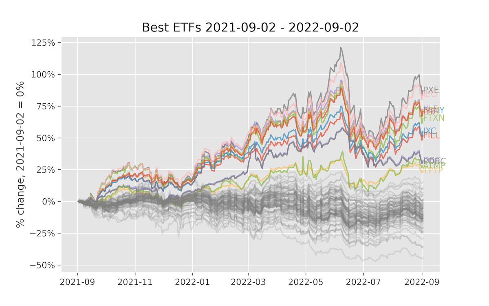
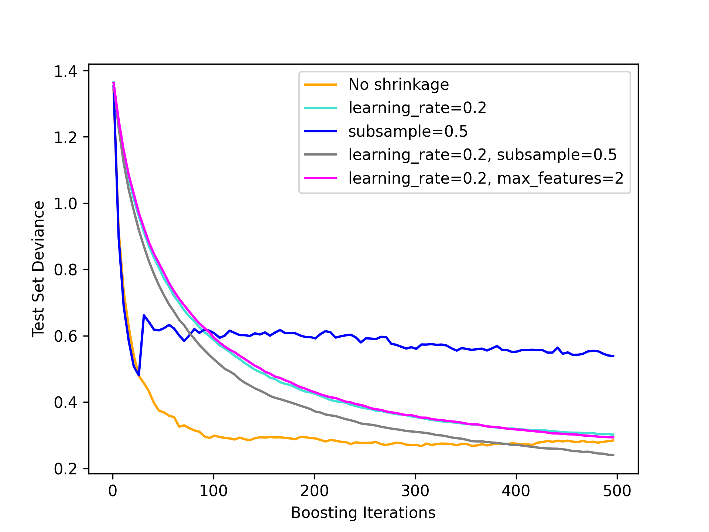
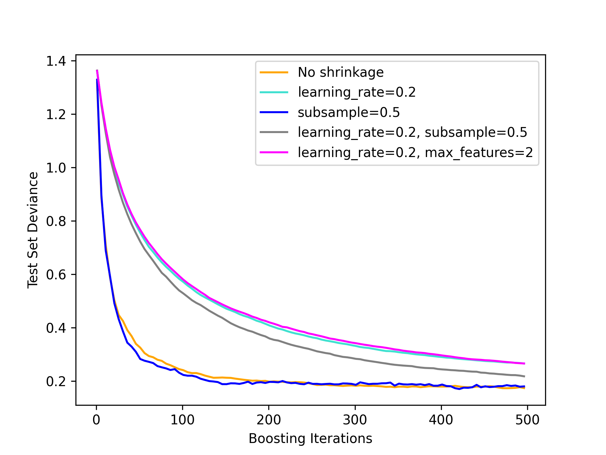
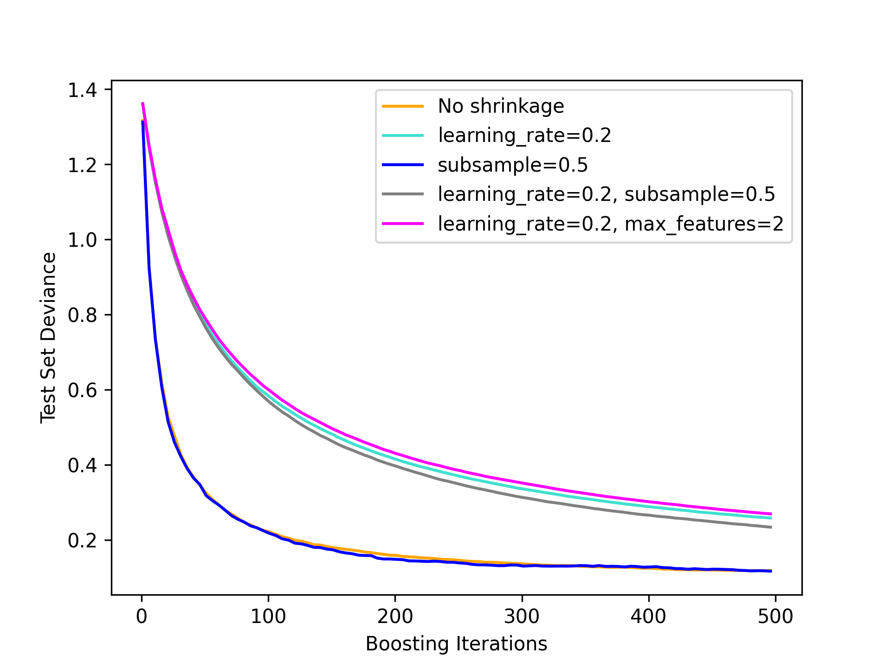
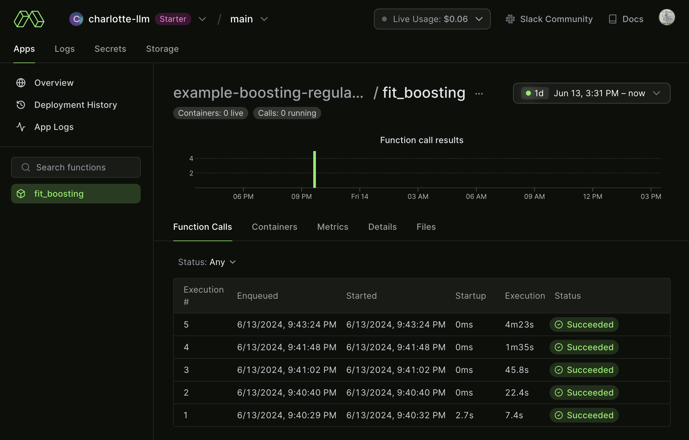
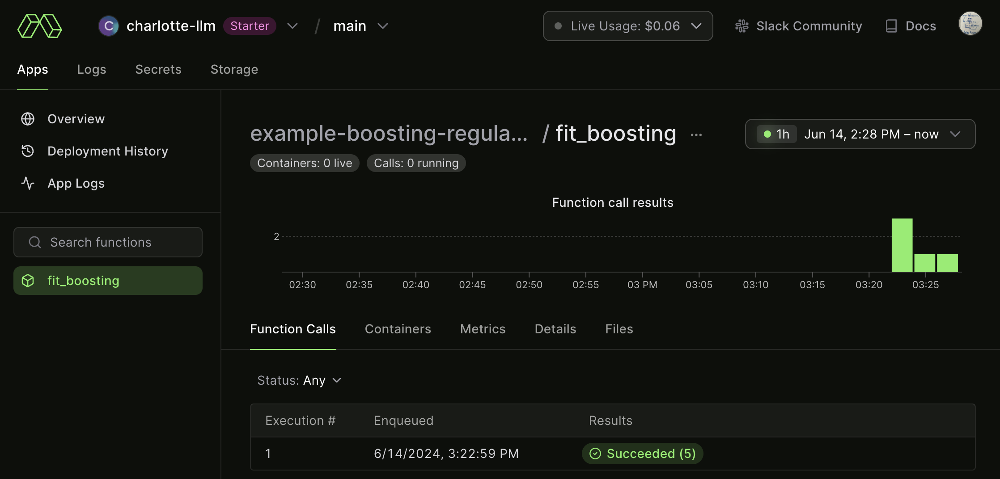

3 Scaling out
03_scaling_out
Let’s now begin to scale out examples.
4 basic_grid_search.py
This example showcases a simple grid search in one dimension, where we try different parameters for a model and pick the one with the best results on a holdout set.
4.1 Defining the image
First, let’s build a custom image and install scikit-learn in it.
import modal
app = modal.App(
"example-basic-grid-search",
image=modal.Image.debian_slim().pip_install("scikit-learn~=1.2.2"),
)4.2 The Modal function
Next, define the function. Note that we use the custom image with scikit-learn in it. We also take the hyperparameter k, which is how many nearest neighbors we use.
@app.function()
def fit_knn(k):
from sklearn.datasets import load_digits
from sklearn.model_selection import train_test_split
from sklearn.neighbors import KNeighborsClassifier
X, y = load_digits(return_X_y=True)
X_train, X_test, y_train, y_test = train_test_split(X, y, random_state=42)
clf = KNeighborsClassifier(k)
clf.fit(X_train, y_train)
score = float(clf.score(X_test, y_test))
print("k = %3d, score = %.4f" % (k, score))
return score, k4.3 Parallel search
To do a hyperparameter search, let’s map over this function with different values for k, and then select for the best score on the holdout set:
@app.local_entrypoint()
def main():
# Do a basic hyperparameter search
best_score, best_k = max(fit_knn.map(range(1, 100)))
print("Best k = %3d, score = %.4f" % (best_k, best_score))Notice the map() function, which is a parallel map over a set of inputs.
It takes one iterator argument per argument in the function being mapped over.
Putting all of this together, we can run it:
$ modal run basic_grid_search.py
✓ Initialized. View run at https://modal.com/charlotte-llm/main/apps/ap-xxxxxxxxxx
Building image im-F71KgZSeUtGyLnboXtpDAA
=> Step 0: FROM base
=> Step 1: RUN python -m pip install 'scikit-learn~=1.2.2'
Looking in indexes: http://pypi-mirror.modal.local:5555/simple
Collecting scikit-learn~=1.2.2
Downloading http://pypi-mirror.modal.local:5555/simple/scikit-learn/scikit_learn-1.2.2-cp310-cp310-manylinux_2_17_x86_64.manylinux2014_x86_64.whl (9.6 MB)
━━━━━━━━━━━━━━━━━━━━━━━━━━━━━━━━━━━━━━━━ 9.6/9.6 MB 204.2 MB/s eta 0:00:00
Requirement already satisfied: numpy>=1.17.3 in /usr/local/lib/python3.10/site-packages (from scikit-learn~=1.2.2) (1.25.0)
Collecting scipy>=1.3.2 (from scikit-learn~=1.2.2)
Downloading http://pypi-mirror.modal.local:5555/simple/scipy/scipy-1.13.1-cp310-cp310-manylinux_2_17_x86_64.manylinux2014_x86_64.whl (38.6 MB)
━━━━━━━━━━━━━━━━━━━━━━━━━━━━━━━━━━━━━━━ 38.6/38.6 MB 230.3 MB/s eta 0:00:00
Collecting joblib>=1.1.1 (from scikit-learn~=1.2.2)
Downloading http://pypi-mirror.modal.local:5555/simple/joblib/joblib-1.4.2-py3-none-any.whl (301 kB)
━━━━━━━━━━━━━━━━━━━━━━━━━━━━━━━━━━━━━ 301.8/301.8 kB 237.9 MB/s eta 0:00:00
Collecting threadpoolctl>=2.0.0 (from scikit-learn~=1.2.2)
Downloading http://pypi-mirror.modal.local:5555/simple/threadpoolctl/threadpoolctl-3.5.0-py3-none-any.whl (18 kB)
Installing collected packages: threadpoolctl, scipy, joblib, scikit-learn
Successfully installed joblib-1.4.2 scikit-learn-1.2.2 scipy-1.13.1 threadpoolctl-3.5.0
[notice] A new release of pip is available: 23.1.2 -> 24.0
[notice] To update, run: pip install --upgrade pip
Creating image snapshot...
Finished snapshot; took 2.85s
Built image im-F71KgZSeUtGyLnboXtpDAA in 15.78s
✓ Created objects.
├── 🔨 Created mount /modal-examples/03_scaling_out/basic_grid_search.py
└── 🔨 Created function fit_knn.
k = 1, score = 0.9822
k = 16, score = 0.9778
k = 17, score = 0.9800
...
k = 93, score = 0.9156
k = 28, score = 0.9711
k = 22, score = 0.9800
Best k = 6, score = 0.9956
Stopping app - local entrypoint completed.
✓ App completed. View run at https://modal.com/charlotte-llm/main/apps/ap-xxxxxxxxxx5 fetch_stock_prices.py
This is a simple example that uses the Yahoo! Finance API to fetch a bunch of ETFs. We do this in parallel, which demonstrates the ability to map over a set of items. In this case, we fetch 100 stocks in parallel.
You can run this script on the terminal with:
$ modal run 03_scaling_out/fetch_stock_prices.pyIf everything goes well, it should plot something like this:

5.1 Setup
For this image, we need:
httpxandbeautifulsoup4to fetch a list of ETFs from a HTML pageyfinanceto fetch stock prices from the Yahoo Finance APImatplotlibto plot the result
import io
import os
import modal
app = modal.App(
"example-fetch-stock-prices",
image=modal.Image.debian_slim().pip_install(
"httpx~=0.24.0",
"yfinance~=0.2.31",
"beautifulsoup4~=4.12.2",
"matplotlib~=3.7.1",
),
)5.2 Fetch a list of tickers
The yfinance package does not have a way to download a list of stocks. To get a list of stocks, we parse the HTML from Yahoo Finance using Beautiful Soup and ask for the top 100 ETFs.
@app.function()
def get_stocks():
import bs4
import httpx
headers = {
"user-agent": "Mozilla/5.0 (Windows NT 10.0; Win64; x64) AppleWebKit/537.36 (KHTML, like Gecko) Chrome/81.0.4044.122 Safari/537.36",
"referer": "https://finance.yahoo.com/",
}
url = "https://finance.yahoo.com/etfs?count=100&offset=0"
res = httpx.get(url, headers=headers)
res.raise_for_status()
soup = bs4.BeautifulSoup(res.text, "html.parser")
for td in soup.find_all("td", {"aria-label": "Symbol"}):
for link in td.find_all("a", {"data-test": "quoteLink"}):
symbol = str(link.next)
print(f"Found symbol {symbol}")
yield symbol5.3 Fetch stock prices
Now, let’s fetch the stock data. This is the function that we will parallelize.
It’s fairly simple and just uses the yfinance package.
@app.function()
def get_prices(symbol):
import yfinance
print(f"Fetching symbol {symbol}...")
ticker = yfinance.Ticker(symbol)
data = ticker.history(period="1Y")["Close"]
print(f"Done fetching symbol {symbol}!")
return symbol, data.to_dict()5.4 Plot the result
Here is our plotting code. We run this in Modal, although you could also run it locally. Note that the plotting code calls the other two functions. Since we plot the data in the cloud, we can’t display it, so we generate a PNG and return the binary content from the function.
@app.function()
def plot_stocks():
from matplotlib import pyplot, ticker
# Setup
pyplot.style.use("ggplot")
fig, ax = pyplot.subplots(figsize=(8, 5))
# Get data
tickers = list(get_stocks.remote_gen())
if not tickers:
raise RuntimeError("Retrieved zero stock tickers!")
data = list(get_prices.map(tickers))
first_date = min((min(prices.keys()) for symbol, prices in data if prices))
last_date = max((max(prices.keys()) for symbol, prices in data if prices))
# Plot every symbol
for symbol, prices in data:
if len(prices) == 0:
continue
dates = list(sorted(prices.keys()))
prices = list(prices[date] for date in dates)
changes = [
100.0 * (price / prices[0] - 1) for price in prices
] # Normalize to initial price
if changes[-1] > 20:
# Highlight this line
p = ax.plot(dates, changes, alpha=0.7)
ax.annotate(
symbol,
(last_date, changes[-1]),
ha="left",
va="center",
color=p[0].get_color(),
alpha=0.7,
)
else:
ax.plot(dates, changes, color="gray", alpha=0.2)
# Configure axes and title
ax.yaxis.set_major_formatter(ticker.PercentFormatter())
ax.set_title(f"Best ETFs {first_date.date()} - {last_date.date()}")
ax.set_ylabel(f"% change, {first_date.date()} = 0%")
# Dump the chart to .png and return the bytes
with io.BytesIO() as buf:
pyplot.savefig(buf, format="png", dpi=300)
return buf.getvalue()5.5 Entrypoint
The entrypoint locally runs the app, gets the chart back as a PNG file, and saves it to disk.
OUTPUT_DIR = "/tmp/"
@app.local_entrypoint()
def main():
os.makedirs(OUTPUT_DIR, exist_ok=True)
data = plot_stocks.remote()
filename = os.path.join(OUTPUT_DIR, "stock_prices.png")
print(f"saving data to {filename}")
with open(filename, "wb") as f:
f.write(data)Let’s see if we can combine what we’ve learned by creating a new example.
6 Practice example
Let’s test out what we’ve learned by creating a new script.
For this, we’ll use another scikit-learn tutorial (Gradient Boosting Regularization) but loop through a parameter (the sample size, n) and for each saving a matplotlib image from fetch_stock_prices.py.
This tutorial is inspired by a recent :probabl. video by Vincent Warmerdam that explored this tutorial more in detail.
6.1 Initialize the App
Let’s first name the app and create the initial image.
import io
import os
import modal
app = modal.App(
"example-boosting-regularization",
image=modal.Image.debian_slim()
.pip_install("scikit-learn~=1.2.2")
.pip_install("matplotlib~=3.9.0"),
)We needed to install matplotlib since we’re calling it in our function.
6.2 Define function
For our function, we’ll use:
@app.function()
def fit_boosting(n):
import matplotlib.pyplot as plt
import numpy as np
from sklearn import datasets, ensemble
from sklearn.metrics import log_loss
from sklearn.model_selection import train_test_split
X, y = datasets.make_hastie_10_2(n_samples=n, random_state=1)
# map labels from {-1, 1} to {0, 1}
labels, y = np.unique(y, return_inverse=True)
# note change from 0.8 to 0.2 test dataset
X_train, X_test, y_train, y_test = train_test_split(X, y, test_size=0.2, random_state=0)
original_params = {
"n_estimators": 500,
"max_leaf_nodes": 4,
"max_depth": None,
"random_state": 2,
"min_samples_split": 5,
}
plt.figure()
for label, color, setting in [
("No shrinkage", "orange", {"learning_rate": 1.0, "subsample": 1.0}),
("learning_rate=0.2", "turquoise", {"learning_rate": 0.2, "subsample": 1.0}),
("subsample=0.5", "blue", {"learning_rate": 1.0, "subsample": 0.5}),
(
"learning_rate=0.2, subsample=0.5",
"gray",
{"learning_rate": 0.2, "subsample": 0.5},
),
(
"learning_rate=0.2, max_features=2",
"magenta",
{"learning_rate": 0.2, "max_features": 2},
),
]:
params = dict(original_params)
params.update(setting)
clf = ensemble.GradientBoostingClassifier(**params)
clf.fit(X_train, y_train)
# compute test set deviance
test_deviance = np.zeros((params["n_estimators"],), dtype=np.float64)
for i, y_proba in enumerate(clf.staged_predict_proba(X_test)):
test_deviance[i] = 2 * log_loss(y_test, y_proba[:, 1])
plt.plot(
(np.arange(test_deviance.shape[0]) + 1)[::5],
test_deviance[::5],
"-",
color=color,
label=label,
)
plt.legend(loc="upper right")
plt.xlabel("Boosting Iterations")
plt.ylabel("Test Set Deviance")
# Dump the chart to .png and return the bytes
with io.BytesIO() as buf:
plt.savefig(buf, format="png", dpi=300)
return buf.getvalue()This is primarily the scikit-learn demo but a few modifications like:
- we modified the
test_sizefrom0.8to0.2 - we parameterized the sample size
n, which we’ll loop through - we’ll return the chart, similarly from
fetch_stock_prices.py - increased the number of boosting iterations from
400to500
Last, we’ll define the local_entrypoint as:
OUTPUT_DIR = "/tmp/modal"
@app.local_entrypoint()
def main():
os.makedirs(OUTPUT_DIR, exist_ok=True)
for n in [1000,5000,10000,20000,50000]:
plot = fit_boosting.remote(n)
filename = os.path.join(OUTPUT_DIR, f"boosting_{n}.png")
print(f"saving data to {filename}")
with open(filename, "wb") as f:
f.write(plot)This will end with us saving each of the images into a folder /tmp/modal.
So let’s now run this:
$ modal run boosting_regularization.py
✓ Initialized. View run at https://modal.com/charlotte-llm/main/apps/ap-xxxxxxxxxx
✓ Created objects.
├── 🔨 Created mount /modal-examples/03_scaling_out/boosting_regularization.py
└── 🔨 Created function fit_boosting.
saving data to /tmp/modal/boosting_1000.png
saving data to /tmp/modal/boosting_5000.png
saving data to /tmp/modal/boosting_10000.png
saving data to /tmp/modal/boosting_20000.png
saving data to /tmp/modal/boosting_50000.png
Stopping app - local entrypoint completed.
✓ App completed. View run at https://modal.com/charlotte-llm/main/apps/ap-xxxxxxxxxxWe can view a few of the images. For example, this is n = 5000:

This is particularly interesting due to the subsample = 0.5, which generally follows No shrinkage but then jumps up. It’s not clear why but a curious case.
Alternatively, let’s look at n = 10000:

Now we see a result consistent with Vincent’s video as all curves smooth out, none shrinkage learns quickly and then levels out very quickly. Even after 500 iterations no shrinkage has a lower deviance, which indicates a better out-of-sample fit.
Let’s last look at n = 50000:

Very similar curves again, but this time the gains of no shrinkage is even magnified more as up to 500 iterations there’s a larger gap between no shrinkage and shrinkage.
What’s nice about Modal is we can also view the remote logs such that:

Not surprising, our last (n = 50000) execution took the longest, taking about 4 minutes and 23 seconds. This is helpful for us to keep in mind and use these logs more as we begin to run more computationally intensive examples moving forward.
But there’s a problem with this setup: we’re missing out on speed gains we could get by parallelizing. Let’s instead use the .map() instead of .remote() when we call our main function:
boosting_regularization_parallel.py
...
@app.local_entrypoint()
def main():
os.makedirs(OUTPUT_DIR, exist_ok=True)
val = [1000,5000,10000,20000,50000]
plots = fit_boosting.map(val)
for n, plot in zip(val, plots):
filename = os.path.join(OUTPUT_DIR, f"boosting_{n}.png")
print(f"saving data to {filename}")
with open(filename, "wb") as f:
f.write(plot)So now when we run, all five of the calls run in parallel, yielding a much faster run time.
We can confirm this by looking at the logs:
